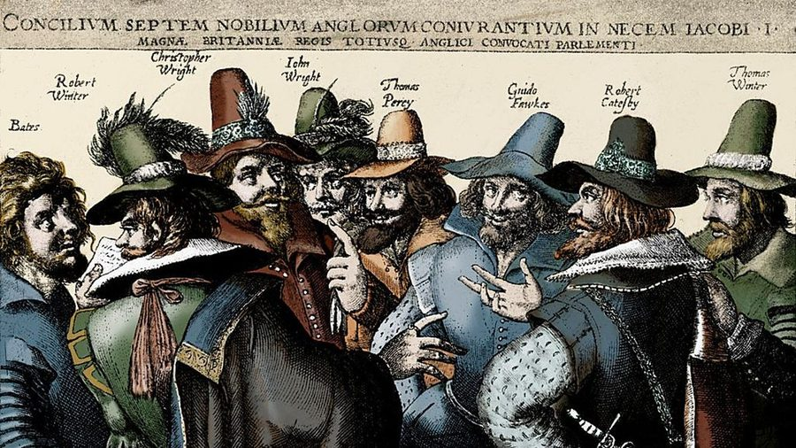

«Высшая проба» · Working through the demo mistakes
📅 28 September 2026 · Lesson 8 · follows the Lesson 7 demo
Blocks checked: 0 / 0
Points today: 0 / 0
Where the points went
Demo result: 39 / 100
The bars show what you scored. The empty part of each bar is what we win back today.
🔊 Фонетика8 / 20
📚 Лексика5 / 30 ← biggest gap
⚙️ Грамматика11 / 30
🌍 Лингвострановедение15 / 20
Diagnosis
Three habits cost most of the points
You know a lot of this material, so this was not a knowledge problem. Most points were lost to how you answered:
👀
1. Choosing what looks right, not what you can prove
Задание 11: you marked committee and businesses as misspelt because they look long and strange, but both are spelt correctly.
Задание 3: choir starts with “ch”, so /ˈtʃɔɪə/ looked right. It was a spelling trap.
🧩
2. Not using the grammar around the gap
Задание 30: after “they were ___” you put burn the midnight oil, which is a verb, so it can’t follow were.
Задание 12: ir- + legible is impossible, because il- goes before l and ir- goes before r. Grammar and spelling rule out options before you think about meaning.
🔢
3. Skipping the mechanical first step
Задание 6: ceremony has 4 syllables and guarantee has 3, but you picked 3- and 2-syllable patterns. Counting first would have removed most of the options.
Задание 5: checking each sentence for “r + vowel” gives the answer every time.
The method
How to do any “match it — some options are extra” task
About 15 of the 30 tasks in the paper look like this, so this method is worth more points than anything else.
🧠 The 6 steps
Read the instruction. How many options are extra (2? 4?)? Can an option be used twice?
Scan all the options first and sort them: nouns / verbs / past forms / adjectives / prepositions.
For each gap, ask what the grammar needs. Look left and right: a / an? to + ? were + ? a preposition after the gap?
Answer the ones you are sure of first and cross them out. Each one you finish leaves fewer choices for the rest.
Read the whole sentence aloud with your answer. Does it sound like a phrase you have heard before?
Finish with elimination. Never leave a gap. For the last one, choose between the options that are left.
Warm-up · Step 3 only: what kind of word goes in the gap?
Don’t look for the answer yet. Only decide what type of word must go in the gap. All of these gaps are from your demo.
1…he nearly ______ — he had never built anything more complicated than a model plane.
2The police have launched an ______ into the incident.
3…so they decided to ______, staying in the lab late every evening.
4She can’t help ______ whenever she watches that video.
5After three attempts, they finally succeeded ______ reaching the summit.
6Many of the ancient letters are ______ because the ink has faded.
💡 Why this matters
In gap 1, only a past form fits. In the demo list, got cold feet was the only past-tense idiom, so you can find the answer from grammar alone.
In gap 2, an + noun means the noun must start with a vowel sound. From the 8 options in Задание 14, only excuse and investigation are left.
This step takes about 3 seconds per gap and often leaves only one or two options.
Take this into the exam
✅ Exam-day checklist
Matching task → read all the options before the first gap.
Check the gap’s grammar (article, tense, preposition) before meaning.
Transcription task → a transcription that follows the spelling exactly may be a trap.
Stress task → count the syllables first.
Spelling task → check each word against the trap list. Don’t pick words just because they are long.
“Find the one with / without…” → check every option. Don’t stop at the first one that seems right.
Never leave a gap. A choice made by elimination is better than an empty answer.
💬 You chose loose instead of lose. Say both words aloud. What is different?
1 · Listen again to the demo recording
💡 Answer & why
✓ lose, quiet, adapt, custom. The script: “…they would hate to lose that sense of community.”
After hate to you need a verb. Loose is an adjective (свободный, болтающийся), so grammar gives you the answer as well.
🧠 The logic
The 8 words are 4 pairs of look-alikes. Usually one word from each pair is in the recording.
Before you listen, say each pair in your head and find the sound that is different:
pair
the difference
loose /luːs/ — lose /luːz/
/s/ like goose vs /z/ like choose
quite /kwaɪt/ — quiet /ˈkwaɪət/
1 syllable vs 2 syllables
adapt /əˈdæpt/ — adopt /əˈdɒpt/
/æ/ vs /ɒ/
custom /ˈkʌstəm/ — costume /ˈkɒstjuːm/
short /ʌ…ə/ vs long /juː/ at the end
While you listen, also use the grammar and meaning around the word. to ___ needs a verb, so ___ needs an adjective.
2 · New practice: choose the 4 words you hear (4 are extra)
💡 Script
Last summer my family went on a long walk through the hills. By the time we reached the top, I was so out of breath that I had to sit down on a rock. My aunt gave me a useful piece of advice: drink a little water every half an hour. When we got back to the hotel, we were all starving, and we had chocolate cake for dessert.
Grammar helps here too: out of ___ and a piece of ___ both need nouns, so the answers are breath and advice.
Задание 3demo 3 / 4
Transcriptions: watch for spelling traps
💬 For choir you chose /ˈtʃɔɪə/. What made that one look right?
1 · Listen again and redo the demo item
1…that knife is very sharp.
2…some fresh salmon with lemon.
3The school choir performed… demo: f
4…a tiny Scottish island.
a/ˈsæmən/
b/naɪf/
c/ˈaɪlənd/
d/ˈsælmən/
e/ˈkwaɪə/
f/ˈtʃɔɪə/
💡 Answer & why
✓ choir = /ˈkwaɪə/, the same sound as in quiet. The “ch” spelling comes from Greek and is pronounced /k/, as in chorus, chemistry, school, character.
The two extra options, /ˈsælmən/ and /ˈtʃɔɪə/, are both “read it letter by letter” versions. The exam writers made them on purpose.
🧠 The logic
For each word, ask: what would someone say if they had only seen the word written down? If a transcription matches that exactly, be careful. It may be the trap.
Look for silent letters: knife, salmon, island, debt, receipt, write, psychology.
Check the 2 extra transcriptions. If both look like spelling-based versions of your words, you have probably spotted the traps correctly.
2 · New practice: listen and match (2 transcriptions are extra)
1The colonel gave the order to march.
2They sailed round the island in a small yacht.
3He finally paid off his debt to the bank.
4Keep the receipt in case you want to return it.
a/rɪˈsiːpt/
b/jɒt/
c/ˈkɒlənəl/
d/det/
e/ˈkɜːnl/
f/rɪˈsiːt/
💡 Why
Colonel sounds exactly like kernel, /ˈkɜːnl/. /ˈkɒlənəl/ is the letter-by-letter trap. In receipt the p is silent, so /rɪˈsiːpt/ is the other trap.
Задание 4demo 2 / 4
Finding /ʒ/: don’t confuse it with /z/
💬 You chose was and surprised. Say them slowly. Is the sound /z/ or /ʒ/, like the ж in жираф?
1 · Redo the demo item: choose 4 words with /ʒ/
💡 Answer & why
✓ usual, measure, occasion, decision
The sentence is full of traps. was, surprised have /z/. passionate, ocean, special, ashore have /ʃ/, the voiceless partner of /ʒ/.
🧠 The logic: /ʒ/ has only a few spellings
/ʒ/ spelling
examples
⚠ looks similar but isn’t /ʒ/
vowel + -sion
decision, occasion, vision, television
-ssion / -nsion = /ʃ/: passion, mission, tension
vowel + -sure
measure, pleasure, treasure, leisure
-ssure = /ʃ/: pressure; sure itself = /ʃ/
-sual / -sually
usual, visual, casual
French words with -ge / -g-
beige, massage, genre, regime
normal -ge = /dʒ/: large, bridge
a few others
Asia, Asian
A plain s between vowels (was, busy, rose, surprised) is /z/, not /ʒ/.
2 · Sort the sounds
treasure
pressure
vision
mission
busy
bridge
beige
ocean
usually
rose
3 · New exam-style item: choose 4 words with /ʒ/
Задание 5demo 0 / 1
Linking /r/: check every sentence
💬 You chose sentence 4, “Four of us stayed…”. Is there an r + vowel there?
1 · Listen again: which sentence has NO linking /r/?
💡 Script & why
1. Their answer appeared in the newspaper on Monday.
2. The engineer admitted that the plan had failed. 3. My brother’s favourite teacher retired last spring. ✓
4. Four of us stayed after the meeting to help.
In 3, teacher is followed by retired, which starts with a consonant, so there is no link. brother’s ends in /z/, not r.
🧠 The logic: a 2-condition test
Find every word that ends in the letter r (or -re): four, their, teacher, after, where…
Look at the next word. Does it start with a vowel sound? If yes, that is a linking /r/: four‿of, where‿is.
Do this for all four sentences and write ✓ or ✗ next to each. The sentence that stays empty is the answer. You can do this from the written words even when the audio is fast.
2 · New practice: which sentence has NO linking /r/?
3 · Click the 4 words that link with /r/ to the next word
💡 Why
Peter and · for an · hour or · after our. There is no link in or two or our lesson, because the next word starts with a consonant.
Задание 6demo 0 / 4
Stress patterns: count the syllables first
💬 Clap the syllables of ceremony and guarantee. How many are there? Now look at the patterns you chose in the demo.
In the demo you chose a 3-syllable pattern for ceremony and a 2-syllable pattern for guarantee. Counting first would have ruled those out.
🧠 The logic
Count syllables by vowel sounds, not by letters. Crossing out every pattern with the wrong length usually leaves 1–2 options.
Use endings that decide the stress:
-ique, -ee, -eer, -oon, -ese are stressed themselves: technique, guarantee, refugee, engineer, balloon, Japanese
-phy, -logy, -ity, -graphy: stress 3 syllables from the end: catastrophe, biology, ability, photography
-ic, -tion, -sion: stress just before the ending: fantastic, information
Say the word quietly with the stress on each candidate syllable. The correct version will sound familiar.
2 · Warm-up: how many syllables?
Wednesday
ceremony
guarantee
comfortable
photography
unique
💡 Why
Wednesday = /ˈwenzdeɪ/, where the first d is silent. Comfortable = /ˈkʌmftəbl/, COMF-ta-ble. The spelling has more vowels than you actually say.
3 · New exam-style item (2 patterns are extra)
1She has a very unique style of painting.
2The main character is a young detective.
3My cousin is studying photography in Paris.
4Every summer she works as a volunteer at the zoo.
aOoo
booO
coO
dooOo
eoOoo
fOo
Задание 8demo 0 / 1
Logical stress: what is being corrected?
💬 You stressed yesterday. Did Speaker A say anything about when?
1 · Redo the demo item
Speaker A: So you’ve already sent the invitations by post?
Speaker B: Not by post; our printer broke down on Monday.
💡 Answer & why
✓ emailed. A said by post, and B corrects this: “not by post, I EMAILED them.” Nobody asked about the time, so yesterday is not new or contrasting information.
🧠 The logic
Read Speaker A and underline the key word they used, for example post.
In B’s sentence, find the word that replaces or contradicts it. That word gets the stress.
Check: if you stress that word, does B sound like they are correcting A? If yes, you have the answer.
2 · New practice: click the word that carries the stress
A: I heard you bought a red dress for the party.
B: Actually,
A: Is Tom driving you to the airport tomorrow?
B: No, Tom’s busy.
A: So you’ve finished your essay?
B: Not yet.
A: Shall we meet at the café at five?
B: The café’s closed on Sundays.
Задания 9 & 10demo 1 / 3
Intonation: know the default tones
💬 In Задание 10 you chose sentence 2, “Did you remember to lock the door?”. What type of question is it, and what tone does it normally have?
1 · Listen again
Задание 9: what does the speaker really mean?
Задание 10: which two sentences have a falling tone?
💡 Script & why
9: A: The results of the contest came out this morning. — B: They’ve ↗come out? A rise on a repeated statement shows surprise: “Really? Is that true?”
10: 1. Where did you leave my umbrella? ↘ (wh-question) · 2. Did you remember to lock the door? ↗ (yes/no) · 3. What a wonderful surprise! ↘ (exclamation) · 4. Are you ready to order? ↗ (yes/no)
Go through the sentence one word at a time. Don’t choose a word just because it is long.
2 · Correct or wrong?
accommodate
neccessary
definately
recommend
embarassed
occasion
beleive
receipt
enviroment
separate
3 · New exam-style item: find 2 misspelt words
💡 Why
✓ embarrassing (rr + ss) · ✓ February. Cancelled and programme are correct British spellings. They are traps, not mistakes.
Задание 12demo 0 / 4
Prefixes: meaning first, then the spelling rule
💬 For [LEGIBLE] you chose ir-. Which letter does legible start with? Which negative prefix goes with that letter?
1 · Redo the demo item
1Our manager tends to [ESTIMATE] ___ how long tasks take, so we always miss our deadlines. demo: h
2Many of the ancient letters are [LEGIBLE] ___ because the ink has faded. demo: f
3The two schools decided to [OPERATE] ___ on a joint science project. demo: a
4Please [ACTIVATE] ___ the alarm before you open the back door. demo: g
apre-
bil-
cco-
dde-
eunder-
fir-
gmis-
hsub-
💡 Answer & why
1. underestimate: they always miss deadlines, so the manager thinks tasks take less time than they do.
2. illegible: il- is the only possible prefix before l.
3. cooperate: two schools working together.
4. deactivate: switch the alarm off.
🧠 The logic
Use the context to decide what the word must mean: too little? not? together? reverse?
Apply the spelling rules for negative prefixes. Often only one option is left:
il- + l (illegal, illogical) · ir- + r (irregular, irresponsible) · im- + m/p (impossible, immature) · in- elsewhere.
Know the meanings of the common prefixes:
under- too little
over- too much
mis- wrongly
co- together
de- remove / reverse
pre- before
sub- below
dis- the opposite
2 · New practice (4 prefixes are extra)
1The instructions were so unclear that I completely [UNDERSTOOD] ___ what to do.
2It is [RESPONSIBLE] ___ to leave young children alone near water.
3Take the chicken out of the freezer tonight so it can [FROST] ___ by tomorrow.
4I think the café [CHARGED] ___ us — the bill was twice what it should have been.
aover-
bil-
cmis-
dde-
eir-
funder-
gpre-
hdis-
Задание 13demo 2 / 4
Synonyms: “fits the sentence” is not the same as “means the same”
💬 You chose exhausted for famished. Hikers after a long climb are probably exhausted. So why is it still wrong?
1 · Redo the two missed items
3. He made a futile attempt to catch the last train. demo: a
4. The hikers were famished after the long climb. demo: c
💡 Answer & why
futile = useless, with no result. famished = very hungry. It is related to famine (голод).
The wrong options are chosen because they fit the context. The question asks what the word means, not what might also be true.
🧠 The logic
Several options will make sense in the sentence. Don’t stop at the first one that does.
Look for word families: famished → famine; futile → like fruitless; obsolete → like old.
Put the option in place of the word. Does it keep exactly the same meaning, or does it only fit the situation?
2 · New practice: all 4 options fit the context, but only one is a synonym
1. After swimming all afternoon, the children were ravenous.
2. He is meticulous about his homework.
3. The film had a rather mediocre ending.
4. They were reluctant to leave the party.
Задание 14demo 0 / 4
Nouns: look at the partner words
💬 Read your demo answers aloud: “read the terms and remedy”, “launched an excuse”, “paid grant to”. Have you ever heard these phrases?
1 · Redo the demo item
1The young scientist was awarded a ___ to continue her research. demo: a
2Before you sign, please read the terms and ___ carefully. demo: h
3The police have launched an ___ into the incident. demo: d
4In his speech, the headmaster paid ___ to the teacher who had retired. demo: c
atribute
brumour
cgrant
dexcuse
econditions
fhabit
ginvestigation
hremedy
💡 Answer & why
award a grant (грант) · terms and conditions (a fixed pair) · launch an investigation · pay tribute to (отдать дань уважения)
Grammar narrows gap 3: an ___ needs a vowel sound, so only excuse or investigation are possible. The police launch an investigation, not an excuse.
🧠 The logic: this task tests collocations
Find the partner word in each sentence: the verb before the gap (award, launch, pay) or the word joined with and (terms and…).
Use the grammar: a / an, singular or plural, a preposition after the gap (tribute to, investigation into).
Ask yourself: have I seen verb + this noun together before? If not, it is probably one of the extra words.
Learn vocabulary in chunks (pay tribute to), not single words (tribute).
2 · New practice (4 nouns are extra)
1The phone arrived broken, so the shop gave me a full ___.
2Nobody knows if it’s true — it’s just a ___ that she’s leaving the school.
3After months of talks, the two sides finally reached an ___.
4Please pay ___ — this will be in the test.
aattention
brefund
chabit
drumour
eagreement
fexcuse
gremedy
htribute
Задание 15demo 1 / 4
Verbs: fixed verb + noun phrases
💬 Which of these did you already know: bring under control, come into force, set an example? Which were completely new?
1 · Redo the demo item
1It took the firefighters six hours to ___ the blaze under control. demo: b
2The new law will ___ into force next January. demo: h
3As the oldest pupil, Mark always tries to ___ an example for the younger ones. demo: g
4Please ___ a seat — the doctor will see you shortly.
aset
bmake
ccome
draise
etake
fdo
gbring
hpay
💡 Answer & why
bring sth under control · a law comes into force · set an example · take a seat
Grammar check for gap 2: a law does the action itself, with no object, so you need an intransitive verb. Only come works: “will come into force”.
🧠 The logic
Look at what follows the gap: the noun and the preposition (___ an example, ___ into force, ___ under control).
Does the verb need an object? “The law will ___ into force” has no object, so choose come or go, not bring or make.
Don’t translate from Russian. “Принять меры” is take measures, and “сделать ошибку” is make a mistake.
2 · New practice (4 verbs are extra)
1You should always ___ your promises.
2It’s your turn to ___ the washing-up tonight.
3Can I ___ a suggestion? Let’s order pizza.
4The teacher asked us to ___ attention to the board.
amake
btake
ckeep
ddo
eraise
fset
gbring
hpay
Задание 16demo 0 / 4
Adjectives: English collocations, not Russian ones
💬 In Russian it’s “сильный дождь”. What do we say in English? Why doesn’t thick rain or loud rain work?
1 · Redo the demo item
1The forecast warns of ___ rain throughout the weekend. demo: h
2After the argument, there was an ___ silence in the room. demo: c
3I have a ___ memory of my first day at school — I remember every detail. demo: b
4Searching the whole forest before dark was a ___ task for the rescue team. demo: e
avivid
bthick
cheavy
dloud
eawkward
ftall
gdaunting
hwide
💡 Answer & why
heavy rain · an awkward silence · a vivid memory · a daunting task (a difficult task that frightens you)
Grammar decides gap 2: an ___ needs a vowel sound, and awkward is the only word in the list that starts with one. This gap has only one possible answer.
🧠 The logic
Check a / an first. In the demo, this alone gave you gap 2.
Translating word by word from Russian is a trap: сильный дождь = heavy rain, крепкий кофе = strong coffee, сильная конкуренция = fierce competition.
Use the explanation after the dash. “I remember every detail” means the memory is clear and bright, so the answer is vivid.
2 · New practice (4 adjectives are extra)
1There was ___ traffic on the way to school, so we were late.
2Drink this — it’s ___ coffee, it’ll wake you up.
3The two teams are in ___ competition for first place.
4He had a ___ escape when the tree fell just behind him.
astrong
bheavy
cpowerful
dfierce
enarrow
fthin
gtall
hbig
Задание 17demo 1 / 4
Dependent prepositions
💬 In Russian: обвинить в, извиниться за. What are they in English? Does translating help or trick you?
1 · Redo the demo item
1She was accused ___ stealing the documents. demo: e
2The success of the project depends ___ everyone’s cooperation.
3He apologised ___ being late for the third time this week. demo: c
4After three attempts, they finally succeeded ___ reaching the summit. demo: a
aat
bof
cwith
don
eabout
ffor
gin
hto
💡 Answer & why
accuse sb of · depend on · apologise for sth (apologise to a person) · succeed in doing
Here the Russian actually helps with apologise for (извиниться за) and succeed in (преуспеть в). It only tricks you with accuse of.
🧠 The logic
Verb + preposition pairs are fixed. Learn them as one unit: accuse-of, rely-on, insist-on, apologise-for, succeed-in, consist-of.
Start with the pairs you are 100% sure of and cross them out. The rest gets easier.
Check what is after the gap. A preposition + -ing is very common here (of stealing, in reaching).
2 · New practice (4 prepositions are extra)
1I’m not very good ___ maths, but I love history.
2She insisted ___ paying for everyone’s dinner.
3He is very proud ___ his little sister’s achievements.
4The neighbours complained ___ the noise from our party.
aat
bof
cwith
don
eabout
ffor
gin
hto
Задание 18demo 1 / 4
Phrasal verbs: read the whole phrase
💬 Gap 3 was “I can’t put ___ with this noise”. Which phrasal verb has with after it?
1 · Redo the demo item
1The meeting was called ___ because the director was ill.
2I can hardly make ___ what he has written — his handwriting is terrible. demo: e
3I can’t put ___ with this noise any longer! demo: c
4Our car broke ___ on the motorway, so we were late. demo: f
aoff
bthrough
cout
dover
eup
faway
gdown
hacross
💡 Answer & why
call off = cancel · make out = manage to see or read · put up with = tolerate · break down = stop working (a car or machine)
It looks like you swapped 2 and 3. Seeing with after the gap tells you it must be put up with.
🧠 The logic
Read past the gap. The word after it (with, of, on) often shows you a three-part phrasal verb: put up with, run out of, get on with, look forward to.
Decide what the phrase must mean in context (cancel, tolerate, stop working), then find the particle that gives that meaning.
2 · New practice (4 particles are extra)
1The plane took ___ an hour late because of the fog.
2Could you look ___ my cat while I’m on holiday?
3We’ve run ___ of milk — can you buy some on your way home?
4She gets ___ really well with her new classmates.
aup
bon
cafter
dthrough
eoff
fout
gaway
hover
Грамматика
Demo: 11 / 30 · review Задания 19, 20, 22–26
Задание 19demo 1 / 4
Articles: the special cases the exam loves
💬 Why do we say the Alps but ∅ Mount Everest? Try to explain before you look.
1 · Redo the demo item
1After a week of hiking in Alps, they spent two quiet days in Geneva. demo: ∅
2Last season she was elected captain of the school volleyball team. demo: a(n)
3 Mr Jenkins phoned while you were out — does anyone here know somebody by that name? demo: ∅
4My brother has played violin in the city youth orchestra since he was nine.
🧠 The rules behind each gap
situation
article
examples
mountain ranges, rivers, seas, oceans, plural countries
the
the Alps, the Himalayas, the Danube, the Netherlands
single mountains, lakes, most countries
∅
Mount Everest, Lake Baikal, France
a unique role after elect, appoint, make, become
∅
elected captain, appointed head of…
a name the speaker doesn’t know (“someone called…”)
a
a Mr Jenkins, a Ms Parker
playing a musical instrument
the
play the violin / the guitar
Before you choose, look for the clue in the sentence. In item 3 it is “does anyone here know somebody by that name?”, which is why the answer is a.
2 · New practice
1We climbed Mount Snowdon last summer.
2 Himalayas are the highest mountains in the world.
3He was appointed head of the science department.
4There’s Ms Parker at the door — she says she’s from the council.
5She taught herself to play guitar from YouTube videos.
6 Danube flows through Vienna and Budapest.
Задание 20demo 1 / 4
Plurals: use the “two ___” test
💬 Say “two sheep”, “two advices”, “two gooses”. Which sound right and which sound wrong?
1 · Redo the demo item
1crisis
2sheep demo: e
3advice demo: a
4goose demo: d
aДобавление окончания (e)s
bИзменение корня
cЗаимствованное (греческое/латинское) окончание
dФорма не меняется
eФормы множественного числа нет
💡 Answer & why
crisis → crises (Greek) · sheep → two sheep (a plural exists, and it looks the same) · advice → “two advices” ✗, it is uncountable, so you say two pieces of advice · goose → geese (the vowel changes, like foot → feet)
You swapped d and e. “No change” means the plural exists but looks the same. “No plural” means you can’t count it at all.
🧠 The logic: 3 quick tests
Can you say “two ___”? If not, it has no plural (advice, information, furniture, luggage, news).
If you can, does the word change? two sheep / deer / fish / aircraft → no change. two geese / mice / teeth / women → root change.
Does it end in -is, -on, -us, -um? It is often Greek or Latin: crisis → crises, phenomenon → phenomena, cactus → cacti, criterion → criteria.
2 · New practice: how does each word form its plural?
cactus
deer
information
tooth
potato
luggage
criterion
aircraft
woman
box
Задание 22demo 2 / 4
Tenses: find the time marker
💬 You swapped finished and had finished. Which words in each sentence tell you the tense?
1 · Redo the demo item
1By the time you arrive, we ___ dinner, so please don’t be late.
2He ___ the city marathon in under four hours last year. demo: c
3The film ___ by the time we got to the cinema, so we went for a pizza instead. demo: b
4My sister ___ all her homework, so now she can go out with her friends.
awill have finished
bfinished
chad finished
dwas finishing
ehas finished
fis finished
🧠 The logic: time marker → tense
marker in the sentence
tense
last year, ago, in 2019, yesterday
Past Simple: finished
by the time + past (we got), before + past
Past Perfect: had finished, the earlier of two past actions
by the time + present (you arrive), by tomorrow
Future Perfect: will have finished
so now, already, just, yet (a result in the present)
Present Perfect: has finished
Underline the marker before you look at the options.
2 · New practice (2 forms are extra)
1When we arrived at the station, the train ___, so we had to wait an hour for the next one.
2Hurry up! By the time we get to the stop, the bus ___.
3My brother ___ home in 2020 and moved to London.
4Where’s Anna? — She ___ already, but she said she’d call you.
ahas left
bleft
chad left
dwas leaving
ewill have left
fleaves
Задание 23demo 1 / 4
Modals: must ≠ mustn’t ≠ needn’t
💬 You matched mustn’t use with “strong certainty”. When does must mean certainty, and what does mustn’t mean?
1 · Redo the demo item
1You mustn’t use your phone during the exam. demo: e
2You needn’t have bought any milk — we already had two bottles. demo: d
3Despite the storm, the crew were able to reach the shore. demo: b
4You ought to see a doctor about that cough.
aadvice
bprohibition
can unnecessary past action
dability in a specific past situation
estrong certainty about the present
🧠 The logic: meaning map
mustn’t do
prohibition: it is not allowed
don’t have to / needn’t do
no obligation: it is not necessary
needn’t have done
you did it, but it wasn’t necessary
must be (+ -ing / adjective)
certainty about the present: He must be tired.
must have done
certainty about the past: It must have rained.
was / were able to, managed to
succeeded in one specific past situation
should / ought to
advice
⚠ Must means certainty only when it is used about a state (must be). When it is an instruction to someone, mustn’t means “don’t do it”.
2 · New practice (1 meaning is extra)
1You don’t have to wear a uniform on Fridays.
2The ground is wet — it must have rained overnight.
3Visitors mustn’t feed the animals.
4You should apologise to her.
aprohibition
bno obligation
ccertainty about the past
dadvice
eability in a specific past situation
Задание 24demo 1 / 4
Verb patterns: look at the last word of the beginning
💬 The teacher made us… and We were made…: one is followed by to and the other isn’t. Which is which?
1 · Redo the demo item
1The teacher made us demo: b
2She can’t help demo: a
3We were made demo: d
4The suspect was last seen
arewrite the whole essay from scratch.
bto wait outside for over an hour.
cthat the answer was correct.
dlaughing whenever she watches that video.
eleaving the railway station at midnight.
🧠 The logic
Sort the endings by form: bare verb (rewrite) · to + verb · that-clause · -ing.
Each beginning needs one form:
make / let sb + bare verb
made us rewrite, let me stay
passive be made / be allowed + to
were made to wait, weren’t allowed to use
can’t help, avoid, enjoy, keep, look forward to + -ing
can’t help laughing
see / hear sb (passive: was seen) + -ing
was seen leaving
Match the forms first, then check that the meaning makes sense.
2 · New practice (1 ending is extra)
1My parents let me
2I’m really looking forward to
3We weren’t allowed
4During the lesson he kept
astay up late on Saturdays.
bto use our phones in class.
cseeing my cousins at the weekend.
dinterrupting the teacher.
ethat the test was easy.
Задание 25demo 1 / 4
Conditionals: label each half past or present
💬 In “She didn’t study medicine, so she isn’t a doctor now”, which part is about the past and which is about now?
1 · Redo the three missed items
1. I didn’t set an alarm, so I overslept.demo: B
2. I’m not tall enough, so I can’t reach the top shelf.demo: B
3. She didn’t study medicine, so she isn’t a doctor now.demo: C
🧠 The logic: 3 steps
Label each half of the original: PAST or NOW. (didn’t set = past, overslept = past. am not tall = now, can’t reach = now.)
Choose the pattern from the labels:
if-part
result
pattern
NOW
NOW
2nd: If + past, would / could + verb
PAST
PAST
3rd: If + had done, would have done
PAST
NOW
mixed: If + had done, would + verb (+ now)
always true
always true
0: If + present, present
Flip positive and negative:didn’t set becomes had set, and overslept becomes wouldn’t have overslept. In the demo, option B in item 1 kept would oversleep positive, so it can’t be right.
2 · New practice
1. I don’t have a car, so I take the bus to school.
2. She forgot her ticket, so she missed the concert.
3. He didn’t learn to swim as a child, so he is afraid of water now.
4. Whenever it rains heavily, the streets flood.
Задание 26demo 0 / 2
Reported speech: questions and commands
💬 We covered this in Lesson 6. Your demo answers were “asked me had I ever been” and “said to us that didn’t touch”. What two rules do these break?
1 · Redo the demo item
1. “Have you ever been to Japan?” Tom asked me.
2. “Don’t touch the paintings,” the guide said to us.
🧠 The logic: two patterns
Reported yes/no question: asked (sb) + if / whether + subject + verb. Use normal statement word order, with no question inversion, and move the tense back.
“Have you been…?” → asked me if I had been… (not had I been)
“Where are you going?” → asked me where I was going (not where was I going)
Reported command or request:told / asked + person + (not) to + verb.
“Don’t touch…” → told us not to touch… (said is never followed directly by a person)
Extra tiles are traps: did, said, don’t, didn’t, was. After you finish, check that every word you used has a job in the sentence.
2 · New practice (there are extra words)
1. “Do you like pizza?” she asked him.
2. “Where are you going?” Mum asked me.
3. “Don’t be late,” the teacher told us.
4. “Please close the door,” she said to me.
Лингвострановедение
Demo: 15 / 20 · review Задания 27 and 30
Задание 27demo 3 / 5
Pictures: look for clues before you guess
💬 You mixed up these two pictures. What can you see in each one? Look at the colours, the kind of picture, the weather, and any vehicles or flags.
1 · Redo the two missed pictures
2demo: e
4demo: a
aThe Boston Tea Party
bThe Battle of Hastings
cThe Defeat of the Spanish Armada
dThe Battle of Bosworth Field
eThe Blitz
fWashington Crossing the Delaware
gThe Battle of Trafalgar
💡 Answer & the clues
Picture 2 → f. A small boat, ice in the river (the crossing happened on Christmas night, 1776), a flag with stars and stripes, and 18th-century hats. It is a painting of the American Revolution.
Picture 4 → e. A black-and-white photograph taken from the air. A bomber plane is flying over a winding river, the Thames in London. Planes and photographs mean the 20th century, so it is the Blitz (1940–41).
🧠 The logic: 4 clue questions
What kind of picture is it? A photograph means after about 1850, and black-and-white suggests a 20th-century war. A painting or engraving means earlier.
What technology is there? Swords and armour, sailing ships, muskets, or aeroplanes?
Where is it? Look for flags, landscape, weather, and buildings.
Is there any text? Captions and names in the picture are the strongest clue.
2 · New practice (2 events are extra)
1

2
3
4
aThe Black Death
bThe Great Fire of London
cThe Sealing of Magna Carta
dThe Battle of Bosworth Field
eThe Boston Tea Party
fThe Gunpowder Plot
💡 The clues
1: a city on fire by a river, with the Tower of London on the right. 2: a group of men in 17th-century hats, with the name Guido Fawkes written above them. 3: a king in a crown at a table with a document, surrounded by knights in chain mail. 4: men on a ship throwing boxes (of tea) into a harbour.
3 · Timeline: in which century did it happen?
The Battle of Hastings
Magna Carta
The Spanish Armada
The Great Fire of London
The Boston Tea Party
Washington crosses the Delaware
The Battle of Trafalgar
The Blitz
💡 Dates
Hastings 1066 · Magna Carta 1215 · Armada 1588 · Great Fire 1666 · Boston Tea Party 1773 · Delaware crossing 1776 · Trafalgar 1805 · Blitz 1940–41
Задание 30demo 2 / 5
Idioms in a text: grammar first, then meaning
💬 Read gap 2 with your demo answer: “the team felt they were burn the midnight oil”. Does that work grammatically?
1 · Redo the demo item
When Jake was invited to join the school robotics team, he nearly
(1) demo: f
— he had never built anything more complicated than a model plane. […] A week before the competition their robot stopped working
completely, and the team felt they were
(2) demo: c.
Jake wanted to
(3) ,
but Lily wouldn’t hear of it, so they decided to
(4) demo: b,
staying in the lab late every evening. In the end the robot passed the final test
(5)
and the team won first prize.
aa piece of cake
bback to square one
cburn the midnight oil
dgot cold feet
ethrow in the towel
fthe icing on the cake
gwith flying colours
💡 Answer & why
(1) “he nearly ___” needs a past verb. Only got cold feet is past tense, so grammar gives the answer immediately.
(2) “they were ___” needs a phrase that can follow were: back to square one or a piece of cake. The robot broke, so the answer is back to square one.
(3) and (4) “to ___” needs a base verb: throw in the towel or burn the midnight oil. “Wanted to give up” is throw in the towel. “Staying late every evening” is burn the midnight oil.
(5) “passed ___” needs an adverbial phrase: with flying colours.
🧠 The logic: sort the idioms before reading for meaning
Label each idiom by its grammar: past verb (got cold feet) · base verb (burn…, throw…) · noun / adjective phrase (a piece of cake, back to square one) · adverbial (with flying colours).
Label each gap by what the grammar needs: nearly ___, were ___, to ___, passed the test ___.
Match labels first. This usually leaves 1–2 idioms per gap, and the meaning decides the rest.
2 · New practice (2 idioms are extra)
Maya had always been
(1)
about joining the drama club, but this year she finally
(2)
and signed up. At the first rehearsal she didn’t know anyone and felt like
(3) .
Luckily, the director told her that learning lines is
(4)
once you find the right method. By the night of the show, she knew her part
(5) .
aa piece of cake
btook the plunge
con the fence
dbreak a leg
einside out
fa fish out of water
gonce in a blue moon
💡 Why
(2) “she finally ___ and signed up” needs a past verb, so the answer is took the plunge. Break a leg is about theatre, which makes it tempting, but it is a base form and doesn’t fit the grammar.
(1) been on the fence = undecided · (3) felt like a fish out of water = uncomfortable, out of place · (4) a piece of cake = easy · (5) knew it inside out = perfectly
Wrap-up
🎯 Your three rules for the real round
Use grammar before meaning. Check articles, tense, and the words around the gap to cut the options first.
Base answers on evidence. Count syllables, check spellings, and find the r + vowel. Don’t choose something because it looks hard or familiar.
Do the sure answers first, then eliminate. Every answer you are sure of makes the remaining ones easier.